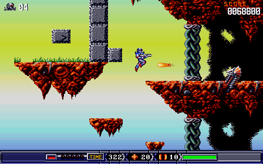
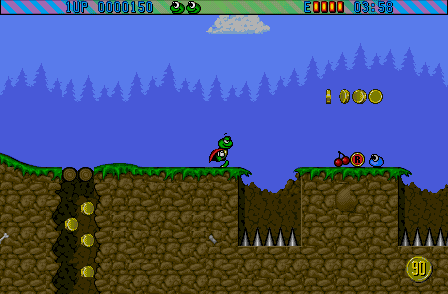
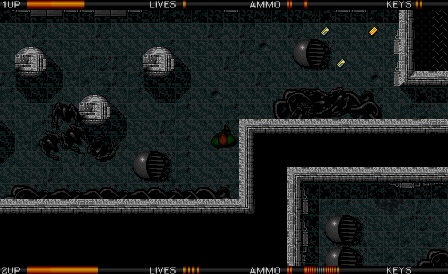

Před třiceti lety jsem na Amize hackoval životy. Teď s AI stavím celé hry znovu.
AREK, Amiga Reverse Engineering Kit, je sada nástrojů v Pythonu pro reverzní inženýrství her z Amigy: čtení obrazů disket, rozbalovače dobových packerů, přísný dekodér 68000 a rekompilátor do C, bezhlavý emulátor jako měřicí přístroj (snímky, otisky paměti, stopy) a MCP server, přes který to všechno používá Claude Code nebo jiný agent.
Vznikl při stavění her s AI: rozebrat hru z diskety až po poslední rutinu a postavit ji znovu pro prohlížeč, věrně originálu, plynule na dnešních obrazovkách, s širším výhledem. Tři první levely se dají hrát s vlastní disketou.
- verze 0.5.17
- 32 modulů
- 27 příkazů
- 26 nástrojů MCP
- 2371 testů
Co znamená širší výhled
Stejný okamžik v přestavbě, dvakrát. Nejdřív původní okno přesně tak, jak ho hra kreslila; pak se okno rozšíří a hra kreslí víc ze své vlastní mapy kolem něj. Nic není vymyšlené, level byl vždycky takhle široký.
Proč prostě neemulovat?
Hra na Amize posouvá svůj svět 50× za sekundu. Váš monitor se obnovuje 60×, 120× nebo 144×. Emulátor může jen opakovat poslední obrázek, dokud nepřijde další, takže pohyb zadrhává. Znovu postavená hra ví, kde všechno je i mezi dvěma kroky, a kreslí každý snímek, který vaše obrazovka zobrazí. Scéna níže je nakreslená touto stránkou, není ze hry.
Zahrajte si první level
Tři hry mají hratelný první level na arek-play; každý končí stránkou o tom, jak vznikl. Stránky nenesou žádná herní data: nahrajete vlastní obraz diskety (.adf), ten se ověří proti známému vydání a nikdy neopustí váš prohlížeč. Kód odvozený ze hry je na stránce zapečetěný a otevře se jen s tou disketou. Obrázky níže jsou z přestaveb, ne z emulátoru.
-
Turrican II: The Final Fight

Svět 1-1, létající ostrovy v širším výhledu: 448 bodů na šířku místo 304. Postaveno znovu od začátku do konce: pět světů, bossové, intro i závěr
Potřebuje disk 1. Zatím ověřeno s jedním pozdějším vydáním diskety; původní prodejní disketa ještě zkontrolovaná není.
-
Superfrog

Magic Woods v širším výhledu: 448 bodů na šířku místo 336. Titulek, intro a první level, postavené za dva dny
Potřebuje disk 1.
-
Alien Breed Special Edition 92

Level 1 v širším výhledu: vetřelci jsou vidět vlevo od místa, kde původní okno končilo. První level; kód 68000 přeložený předem, ne přepsaný ručně
Potřebuje disky 1 a 2.
Jak se hra staví znovu
Pravidlo je prosté: jediný zdroj pravdy je originál. Nic se nekreslí z paměti ani neodhaduje z videa; každý krok se měří proti skutečné hře běžící v emulátoru.
- Přečíst disketu
Zmapovat, kde na disketě leží kód, grafika a hudba a jak je hra nahrává.
- Rozbalit
Hry té doby všechno komprimovaly vlastními packery. Každý rozbalovač se postaví znovu a ověří bajt po bajtu proti paměti emulátoru.
- Porozumět kódu
Přeložit strojový kód 68000 do čitelné podoby, rutinu po rutině, a oddělit herní logiku od částí, které řídí speciální čipy Amigy.
- Dokázat každou rutinu
Spustit znovu postavenou rutinu nad otiskem paměti originálu a porovnat výsledek s originálem. Shoda, nebo není hotovo.
- Postavit pro dnešek
Rozběhnout hru v prohlížeči, pak porovnat snímky s originálem ve známých okamžicích. Teprve potom přidat, co originál neuměl: plynulý pohyb a širší výhled.
Dvě cesty do prohlížeče
Ani jedna není emulace. Žádná Amiga se nesimuluje, není potřeba Kickstart ROM a nic neinterpretuje strojový kód hry: znovu postavená hra běží jako nativní kód prohlížeče a kreslí každý snímek, o který si obrazovka řekne.
APřepis
Hra se napíše znovu ručně, rutinu po rutině, každá ověřená proti paměti originálu. Touto cestou šel Turrican II. Dává největší volnost pro vylepšení a stojí nejvíc času.
BPřeklad
Rekompilátor z kitu přeloží kód 68000 předem do C a to se zkompiluje do WebAssembly; speciální čipy Amigy jsou namodelované jen tak daleko, jak je hra používá. Touto cestou šel Alien Breed a Superfrog: první level běžel během pár dnů a ručně se přepisují jen rutiny, kterých se širší výhled a plynulý pohyb dotýkají.
U nové hry přijde nejdřív druhá cesta: přeložit všechno, změřit a teprve pak přepsat jen to, co vylepšení potřebují. V obou případech je výsledek lehčí než emulátor; přepis Turricanu II drží 60 snímků za sekundu i na procesoru šestkrát přiškrceném.
Bajt, který drží vaše životy
Starý trik pořád funguje, jen má lepší nástroje. Udělejte otisk paměti hry, přijďte o život, udělejte další otisk a porovnejte je. Bajt, který klesl o jedna, je ten, do kterého jsem před třiceti lety poukoval. Odtud nástroje sledují každou instrukci, která ho čte nebo zapisuje.
# zastavit v rutině snímku, brzy a později
$ arek bpstate --address 0x2a40 \
--pass 50 --end 30 --out before
$ arek bpstate --address 0x2a40 \
--pass 400 --end 30 --out after
$ arek diff before after
1 differing run(s):
01f3a2-01f3a3 (1 B) expected 03 got 02Příkazy jsou skutečné; adresa a výsledek jsou vymyšlené. Druhé zastavení je umístěné za okamžik, kdy hra ztratí život.
Pokus o to, co AI dokáže
Začalo to jako test. Dal jsem různým AI agentům pro programování, Claude Code a OpenAI Codex, stejný druh úkolu na různých hrách: rozebrat hru od diskety nahoru a postavit ji znovu, jen s disketou, emulátorem a pravidlem, že každé tvrzení se musí změřit.
Dostali se překvapivě daleko a dělali i chyby, ze kterých stojí za to se poučit: dekodéry, které špatně přečetly instrukci, obraz, který na jednom monitoru vypadal dobře a na jiném se třásl. Každý projekt si cestou postavil vlastní nástroje. Ty, které se osvědčily na víc než jedné hře, se staly AREKem.
Pak přišel druhý test: usnadní kit další hru? Čerstvá relace na menším a rychlejším modelu (Claude Sonnet) dostala Superfrog, který nikdy neviděla, z diskety k prvnímu levelu hratelnému na tomto webu za dva dny; čtení, rozbalování, překlad a měření dělal kit. Mezery, na které narazila, se tentýž den vrátily do kitu.